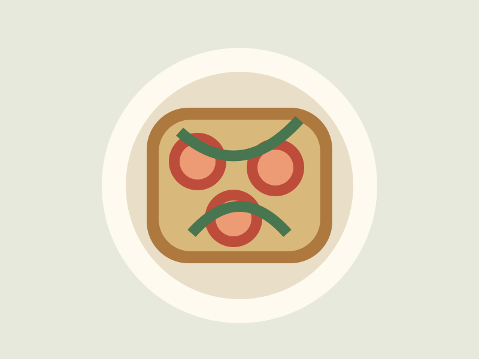

Roasted tomato toast
A small recipe for a relaxed study break.
20 minutes · Vegetarian · 2 servings
Ingredients
Cooking method
- Roast sliced tomatoes with oil and pepper.
- Toast the bread until crisp.
- Add tomatoes and fresh herbs. Serve warm.